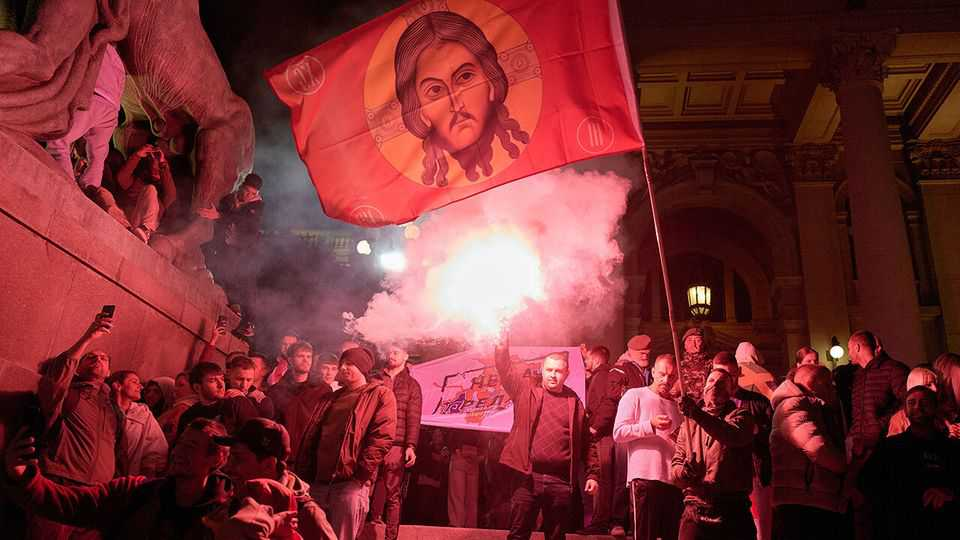

Serbia’s students found a new way to topple a strongman
Like Viktor Orban, Aleksandar Vucic fell to an anti-corruption movement

Oct 29th 2026
For 18 months Pioneers’ Park in central Belgrade has been a political hotspot. In early 2025 it was taken over by protesting students. Then forces loyal to Aleksandar Vucic, the country’s leader, fenced it off and set up an encampment. On October 25th, the day of Serbia’s general election, a posse of black-clad men assembled; they seemed to be pro-government thugs. But they vanished after Mr Vucic unexpectedly announced that he had lost. By the next day the fences were down and the tents destroyed, as citizens symbolically reclaimed the park.
Taking back the country’s other institutions will be harder. Mr Vucic and his Serbian Progressive Party (SNS) ruled for 14 years, dominating the courts, the media and the economy. The scale of his defeat was unexpected. Opinion polls had shown the SNS running neck-and-neck with the opposition Student List, a mostly leaderless protest movement. Instead the SNS took just 39%. The students won 53%, giving them 141 MPs in the 250-seat parliament. They will try to restore the rule of law to the state that Mr Vucic captured.
Like Hungary’s Viktor Orban, who was defeated by a broad popular movement in April, Mr Vucic was felled by outrage at corruption. Membership in the SNS had become a requirement for career advancement in state-linked institutions and big businesses, a communist-style practice that led to cynicism and resentment. Mass demonstrations began in 2021 in protest against a proposed lithium mine. In 2024 the collapse of a railway-station canopy that killed 16 people was blamed on shady contractors; Serbs came to feel that government corruption had left no one safe. That sparked the student movement, which started in universities, staged huge rallies throughout the country, and then met in faculty-based “plenums” to select candidates for the elections.
How the Student List will govern is unusually unclear. None of its MPs has a political background; they are members of civil society selected for their expertise. Serbs wonder whether power will lie with the new ministers, or with the students who picked them. One possible prime minister is Dejan Soskic, a former head of Serbia’s national bank and now a Student List deputy. Once installed, he says, the government “will operate as any other”. The MPs have signed the movement’s manifesto, guaranteeing that the students will have “a very significant impact”.
That manifesto, though, is full of promises to “spend the public funding responsibly” but light on detail. The students aimed to attract every voter tired of the SNS, regardless of political leanings. The movement embraces everyone from hard-core nationalists to easy-going liberals. The final election rally, which drew 150,000 people, featured headscarf-wearing Bosniak Muslims, Orthodox flags portraying Jesus and cardboard cutouts of Novak Djokovic, the Serbian tennis champion.
In the long run the movement could break up into left, centre and right factions. On foreign policy, its programme suggests little difference from that of Mr Vucic. It opposes the independence of Kosovo and eschews sanctions on Russia. Mr Soskic is ambiguous about whether Serbia will continue to sell arms to Ukraine: the students “do not support the idea of having economic benefits from disasters”. But Serbia’s effort to join the European Union could benefit if its government makes progress on the rule of law.
Mr Vucic had resigned as president, for which he was ineligible to run again, in order to run for prime minister. Some had feared he might resort to fraud or violence rather than give up power. Fraud there was, but not enough to affect the outcome. Ana Brnabic, an SNS member who took over as acting president when Mr Vucic stepped down, says that as the results came in and it became clear there was no path to victory, “he said ‘There is no reason not to announce this…We lost, and that is it’.”
The SNS is primarily a patronage machine, handing out jobs, public contracts and money. Having lost that power, it may not prosper in opposition, or even survive. Efforts to purge its apparatchiks have begun. This week supporters of the Student List angrily confronted the owner of a pro-Vucic newspaper, and demanded the resignations of editors at the public broadcaster, which had refused to report on the student protests. Ms Brnabic calls such demands “revolutionary terror”. An openly gay woman of partly Croatian descent, she says that since the election she has received threatening messages calling her a “Croatian whore” and a “dead lesbian”.
Yet the SNS still has resources. It is deeply entrenched in the organs of the state. Mob bosses are widely reported to be collaborating with Serbia’s security services and with senior politicians. The Student List campaigned under the slogan “Serbia or the Mafia”, but breaking the nexus between the state and organised crime is dangerous. One former prime minister who tried it, Zoran Djindjic, was assassinated in 2003 for his pains.
In one way Mr Vucic’s defeat differs from Mr Orban’s. Hungary’s opposition was headed by Peter Magyar, a charismatic social-media front man with an indefatigable appetite for campaigning. Serbia’s is amorphous and decentralised. That has been a strength, but could become a weakness in office. Mr Vucic has predicted that the students will collapse, and that he will be back in power in two years. Perhaps. But they have shown other countries a new way to beat a strongman.■